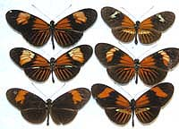
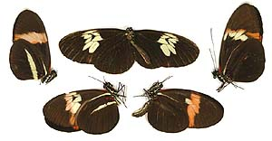
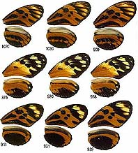

Databases of hybrid broods between Heliconius butterflies
Over the years a number of crosses have been performed to test models of inheritance for colour patterns. Here we begin to document databases of these broods. As evo-devo studies of Heliconius hot up (see also Chris Jiggins' www.heliconius.org site, and W. Owen McMillan's website on Heliconius erato genomics), and as Heliconius becomes a model organism, perhaps with its genome sequenced, the databases of these hard-to-achieve crosses will become increasingly important.

James Mallet and Fraser Simpson [H. erato and H. melpomene,
Peru 1986-1987]

James
Mallet and Fraser Simpson [H. melpomene NW Colombia x Costa Rica,
performed Texas 1980]
Explanation of broods

Mathieu
Joron [H. numata brood 502 showing single-gene inheritance of mimetic
pattern, Peru]
Other databases of Heliconius artificial crosses, inheritance and development of colour patterns
Chris Jiggins and
www.heliconius.org [H. melpomene, H. cydno, +
H. erato, H. himera]
W.
Owen McMillan [H. erato, H. himera]
Other
Artificial hybrids between Heliconius species
Last updated: 21 Nov 2011